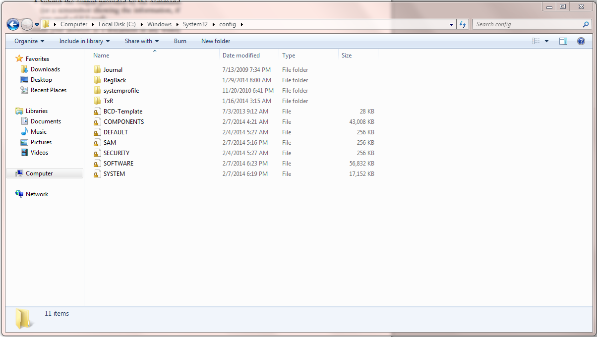

Windows places its startup scripts, a.k.a configuration files, in a system called the Windows Registry.
The Windows Registry is a hierarchical database that stores configuration settings and options on Microsoft Windows operating systems. It contains settings for low-level operating system components and for applications running on the platform that have opted to use the registry. The kernel, device drivers, services, SAM, user interface and third party applications can all make use of the registry. The registry also provides a means to access counters for profiling system performance.
Here is where you can find the files ...
And here is the utility windows provides for manipulating these files